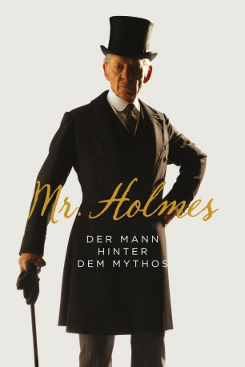

#3464 Mr. Holmes
 gesehen am 16.05.2016
gesehen am 16.05.2016
 
 IMDB-Wertung: 6.9 / 10
IMDB-Wertung: 6.9 / 10  Metascore: 0
Metascore: 0 
Sherlock Holmes (Ian McKellen) hat es mittlerweile auf stolze 93 Jahre gebracht und lebt zurückgezogen in seinem Landhaus in Sussex. Über Heldengeschichten, die im Kino über ihn berichtet werden, kann der in die Jahre gekommene Meisterdetektiv nur den Kopf schütteln, ist doch das meiste glattweg erfunden. Nie trug er die legendäre Kappe und überhaupt bevorzugte er schon immer Zigaretten. Tagsüber widmet er sich nun der Bienenzucht und weist den Sohn (Milo Parker) seiner Haushälterin Mrs. Munro (Laura Linney) in die Geheimnisse der Imkerei ein. Die beiden sind die einzigen, die er in seiner Nähe duldet. Doch manches Mal kommen die Erinnerungen an alte Fälle gegen seinen Willen auf, insbesondere an diesen einen, in dem eine wunderschöne Frau im Spiel war. So bricht er zu seiner letzten großen Reise auf, um die Chance zu nutzen, mit sich selbst ins Reine zu kommen.
Jahr: 2015
Dauer: 99 Minuten
FSK: 0
Land: England Studio: Alamode FilmTonspuren: DTS - ,
Untertitel:
Auflösung: 1080p (1920x800) Größe: 4372 MB
Genre: Drama, Mystery
Regisseur: Bill Condon
Drehbuch: Tran Anh Hung
Soundtrack:
Darsteller:
 Ian McKellen als Sherlock Holmes
Ian McKellen als Sherlock Holmes Laura Linney als Mrs. Munro
Laura Linney als Mrs. Munro- Milo Parker als Roger
 Hiroyuki Sanada als Tamiki Umezaki
Hiroyuki Sanada als Tamiki Umezaki Hattie Morahan als Ann Kelmot
Hattie Morahan als Ann Kelmot Patrick Kennedy als Thomas Kelmot
Patrick Kennedy als Thomas Kelmot Roger Allam als Dr. Barrie
Roger Allam als Dr. Barrie Philip Davis als Inspector Gilbert
Philip Davis als Inspector Gilbert Frances de la Tour als Madame Schirmer
Frances de la Tour als Madame Schirmer- Zak Shukor als Masuo Umezaki
 John Sessions als Mycroft Holmes
John Sessions als Mycroft Holmes Michael Culkin als Bank Manager
Michael Culkin als Bank Manager- Oliver Devoti als Ticket Agent
 Nicholas Rowe als Matinee 'Sherlock'
Nicholas Rowe als Matinee 'Sherlock'- Sam Coulson als Matinee 'Kelmot'
 Frances Barber als Matinee 'Madame Schirmer'
Frances Barber als Matinee 'Madame Schirmer' Hermione Corfield als Matinee 'Ann Kelmot'
Hermione Corfield als Matinee 'Ann Kelmot' Kit Connor als Boy
Kit Connor als Boy- Zoe Rainey als Boy's Mother
 Eileen Davies als Lady on Platform
Eileen Davies als Lady on Platform Sarah Crowden als Mrs. Hudson
Sarah Crowden als Mrs. Hudson- John Carr als Patron in Cinema , uncredited
- Elizabeth Jane Cassidy als Waitress , uncredited
 Gioacchino Jim Cuffaro als Passer by , uncredited
Gioacchino Jim Cuffaro als Passer by , uncredited Sergine Dumais als Ann Kelmot , uncredited
Sergine Dumais als Ann Kelmot , uncredited- Sam Exley als Stone Mason , uncredited
- Ben Farrow als Bank Clerk , uncredited
- Yumiko Hanasaka als Middle Class Lady , uncredited
- Paul Kerry als Cinema Attendee , uncredited
- Rogers Leona als Lady on Train , uncredited
- Devlin Lloyd als Sherlockian / Cinema Attendee , uncredited
 Shina Shihoko Nagai als Japanese Middle Class / Serving Staff , uncredited
Shina Shihoko Nagai als Japanese Middle Class / Serving Staff , uncredited- Jason Nicholls-Carrer als 1919 Gent / 1947 Cinema Goer , uncredited
- Tom Patrick als Tea Shop Customer , uncredited
- Dean Sills als Passer-by , uncredited
 Clem So als Japanese Customer , uncredited
Clem So als Japanese Customer , uncredited- Mark Underwood als Maitre d' , uncredited
- Nathan Webb als Paramedic , uncredited
- Spike White als Joe Gilbert , uncredited
- Charles Maddox als Oswald
- Takako Akashi als Maya Umezaki
- David Foxxe als Chemist
- Mike Burnside als Ann's Solicitor
- Colin Starkey als Dr. John Watson
 Claire Ashton als Bookshop Customer , uncredited
Claire Ashton als Bookshop Customer , uncredited- Neil Bishop als Army Officer , uncredited
- Paul Blackwell als Station Passenger , uncredited
- Sal Bolton als Passer by / Sherlockian , uncredited
- Siong Loong Choong als Japanese Peasant , uncredited
- John Duggan als Bookshop patron , uncredited
Datei: X:\2015(G-M)\Mr. Holmes (2015, FSK0, 1920x800).mkv seit 11.04.2016
Festplatte: HD 2015(A-Z)
 Es gibt insgesamt 129 Filme in der Gruppe '2015(G-M)'
Es gibt insgesamt 129 Filme in der Gruppe '2015(G-M)'